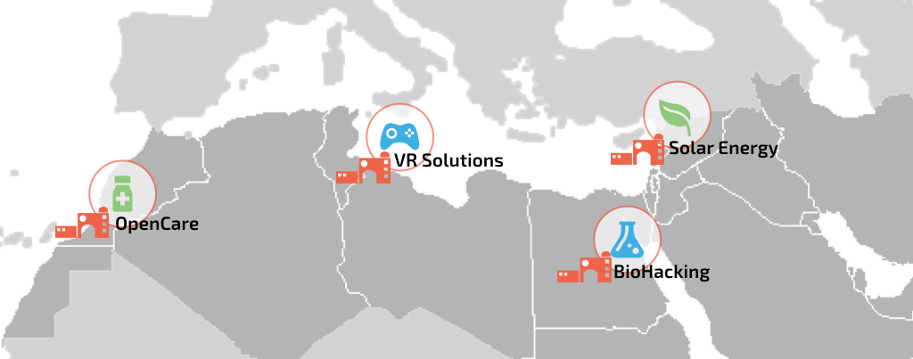
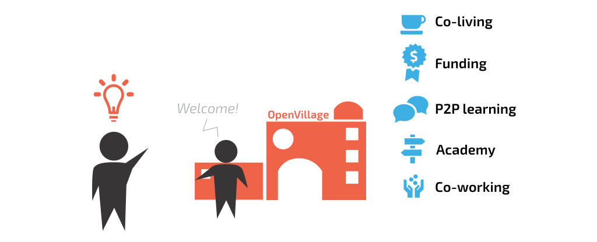
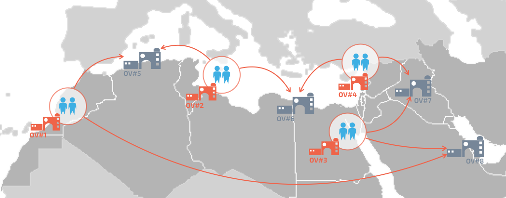

Aenean ornare velit lacus, ac varius enim lorem ullamcorper dolore aliquam.
It all starts with a house. Spaces that mix co-living, co-working and entrepreneurship incubation in small fast moving autonomous communities with shared digital infrastructure. Two people run the house and are paid through the program, one is responsible for the place the other is responsible for the projects.
Every house defines, based on the needs of the immediate surroundings, a core project for the common good. It could vary from waste disposal, to energy innovation, to robotics or software development. During three years the house has access to a set amount to funding, distributed as they see fit after peer review, for development of projects in this field. If necessary, a house can switch it’s focus as the community grows and new needs emerge.
People running projects will live and work together in the house with subsidized rent and can apply for project funding while in the program.
These houses should be safe places for grassroots innovation, gyms for entrepreneurship, like the caravanserai of the Silk Road, places where you will meet other travellers, speak different languages and share informations and ideas.
Co-entrepreneurship is nurtured in the houses through a blank canvas approach:
People that inhabit the houses are our agents of connection in the network. Every year people from each established house are chosen to become what we call an Away team, deployment experts that bring their knowledge to new houses in new countries, for a intense residency of 4 months.
In order to grow a diverse ecosystem, Away teams act more like a facilitators than as ambassadors. They have their experience from past houses, but are in the new house to adapt and share what they know in order to create something unique.
Every new house will build on top of other houses experience, strengthening the startup process and the network as a whole.
Residency periods will be very important for the Away teams, who will acquire soft skills that are the keys of successful companies: learning how to teach, empathize with people from different background and discover new markets for their own projects. Away teams will be at the core of the program, travelers bringing goods and ideas along the routes.
Our houses and participants will be connected through the same digital discussion platform, with access to innovative tools for online co-creation and collective intelligence: SenseStack.
SenseStack tools provide a managed discussion forum, digital ethnography tools, sensemaking network graphs, participatory budgeting and co-created project planning.
Digital ethnography of online conversations allows the growing community to understand itself better and map paths between hard problems and people with unknown solutions, it’s collective intelligence in action.
We use these tools and the data generated to monitor the growth, density and dynamics in the network.
SenseStack increases the probability of generating innovative ideas, makes success more likely through skill sharing, improves connectivity between clusters of participants through peer review discussions on funding proposals, ensures documentation through methods and easy to use tools, paves the way for remote collaboration on house projects via the platform, and transmits knowledge via the online academy.
Our online network and the software are also the infrastructure that allow us to measure the result of the project.
We set key metrics that will define the success of the project (and that will help make decisions and nudge optimization during the process):
SenseStack will be made available to the community together with access to the Edgeryders Academy, a peer to peer archive of online courses for social entrepreneurs.
Every house will start with an ignition period of 4 months where we will share the blueprint for the startup phase (SenseStack, Festival Blueprints, Away team mentorship and the Edgeryders Academy). Courses are produced by project participants and by Edgeryders experts through a collaborative effort.
On the community online platform there will be case studies, discussion, research and business templates to imagine different revenue streams and models.
Main activities of the house in the ignition phase are divided in two areas, the house lead will focus on find integrative funding for the space and imagine activities that could bring revenues to integrate the fixed costs, while the project community manager will instead focus on organizing open courses, events and open call to start the nurturing of local entrepreneurship around the chosen area of entrepreneurship.
Network density increases as more connections are made, both to the local community and to the international community of participants, activists, expert advisors and investors.
Festivals are another important piece of the house ignition period, and are opportunities for the local community to get in touch and interact with the global stakeholder that the Edgeryders community could reach, but also to bring together other social entrepreneurs and organize live teaching session and co-creative workshops.
Edgeryders has a track record of community co-created events and since our foundation we’ve used festivals as opportunities to boost the activities of the community and increase the density of the network.
Three are the ingredients of the organical growth of the program:
OpenVillage is a safe space for young entrepreneurs to learn, evolve and spread their knowledge. We are designing a system that is measurable, with clear KPIs that will helps us adapt to the evolution of the project, based on a strong grassroot foundation.
We want to create a digital-physical Silk road to enhance innovation and boost economy in the MENA region.
Aenean ornare velit lacus, ac varius enim lorem ullamcorper dolore aliquam.

Aenean ornare velit lacus, ac varius enim lorem ullamcorper dolore aliquam.

Aenean ornare velit lacus, ac varius enim lorem ullamcorper dolore aliquam.
Sed varius enim lorem ullamcorper dolore aliquam aenean ornare velit lacus, ac varius enim lorem ullamcorper dolore. Proin sed aliquam facilisis ante interdum. Sed nulla amet lorem feugiat tempus aliquam.